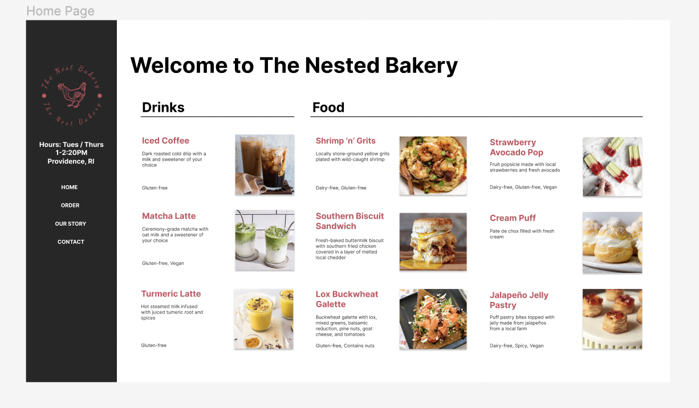
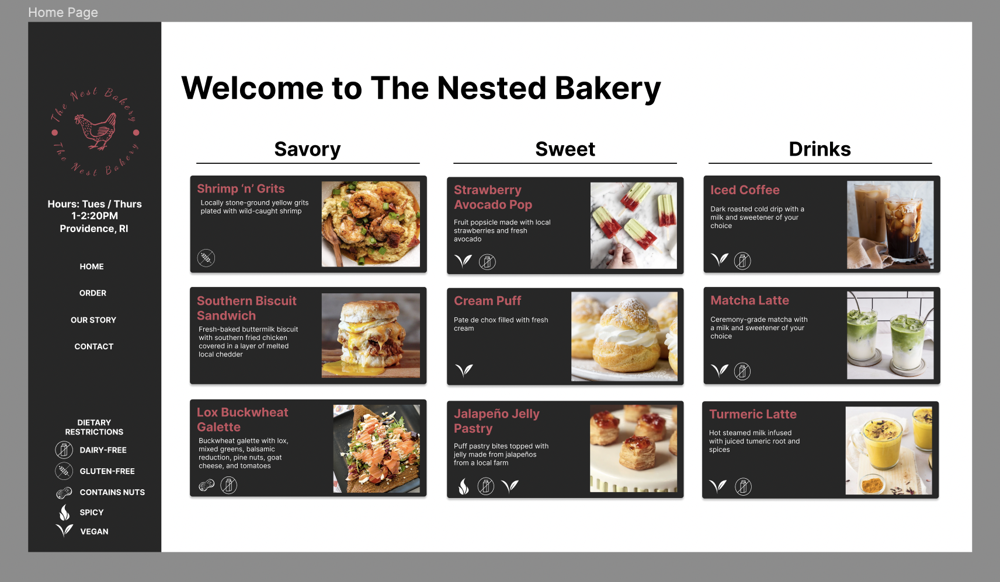
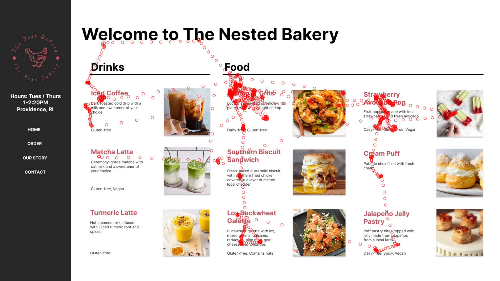
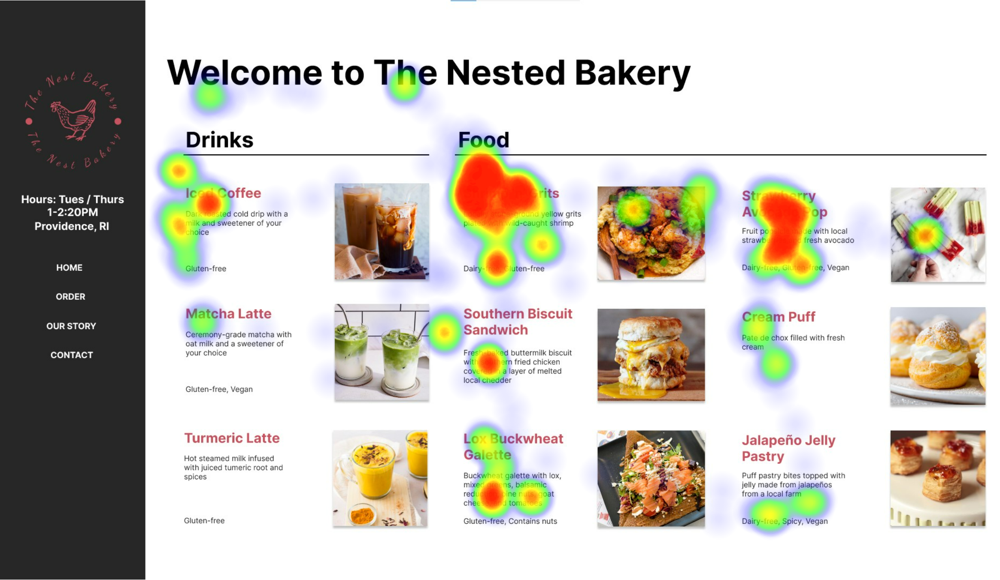

Case Overview
My Role
UX Designer/ResearcherBackground
When ordering in person or online, the ability to easily parse allergen information is critical for those with dietary restrictions. In this study, I worked with a team of several other students to breakdown the UX of allergens on menus and conduct eye-tracking studies of common layouts.Key Project Structure
- Designing Layouts
- A|B Figma Prototypes
- Eye-tracking and Analysis
Key Project Outcome
Heat maps of user interactions with different menu layouts.Designing Layouts
In designing allergen information layouts, our team first looked into the most common methods used in the status quo. In particular, we found two main methods of displaying this information: written labels and icons. In order to compare these two, we created two Figma menu designs of these different allergen displays of with the same information.
Written Labels
{kind=link}
Icon Labels & Key
{kind=link}
Predictions & Possibilities
It was unclear, prior to testing, if one layout would be more effective than the other or that the user patterns would simply differ. Written labels allowed for a greater diversity of allergen information without a key. On the other hand, icons could potentially allow for more rapid identified and overal menu scanning, but unfamilarity with icons could potentially make the menu harder to parse. When testing, we wanted to prioritize keep several of these questions.
- Do written labels provide more information than simply the menu item description?
- Do users look at the allergen key, or do they have an intuitive sense of common icons?
- Does the label type affect the order in which each user looks at each menu item?
Testing Results and Analysis
For these eye-tracking tests, users were prompted to "order" two menus for themselves and their friend with a dairy allergy. Shown below are how viewer scanned each version.
Eye Tracking - Written
{kind=link}
Heatmap - Written
{kind=link}
Observations
When the ingredients are written out, the viewers tended to look sequentially at all components (title, then description, then dietary restrictions).
Eye Tracking - Icons

Heatmap - Icons

Observations
With the dietary icons, the users glanced through the items first and then looked at the legend for the icons afterwards, indicating the users then glanced quickly at the items they wanted in order to check the dietary restrictions.
Takeaways
In both the written and icon label formats, all aspects of the allergen information layouts were observed (i.e the key, icon, & written labels). However the user patterns differed in that the written labels prompted users to read the allergen information as they looked at the menu items, whereas the icons prompted the users to first look through the menu item descriptions, and then proceed to evaluate the allergen information. Additionally, as a menu size scales up, the user patterns observed in regards to these label types might change, and thus which layout might be better suited.